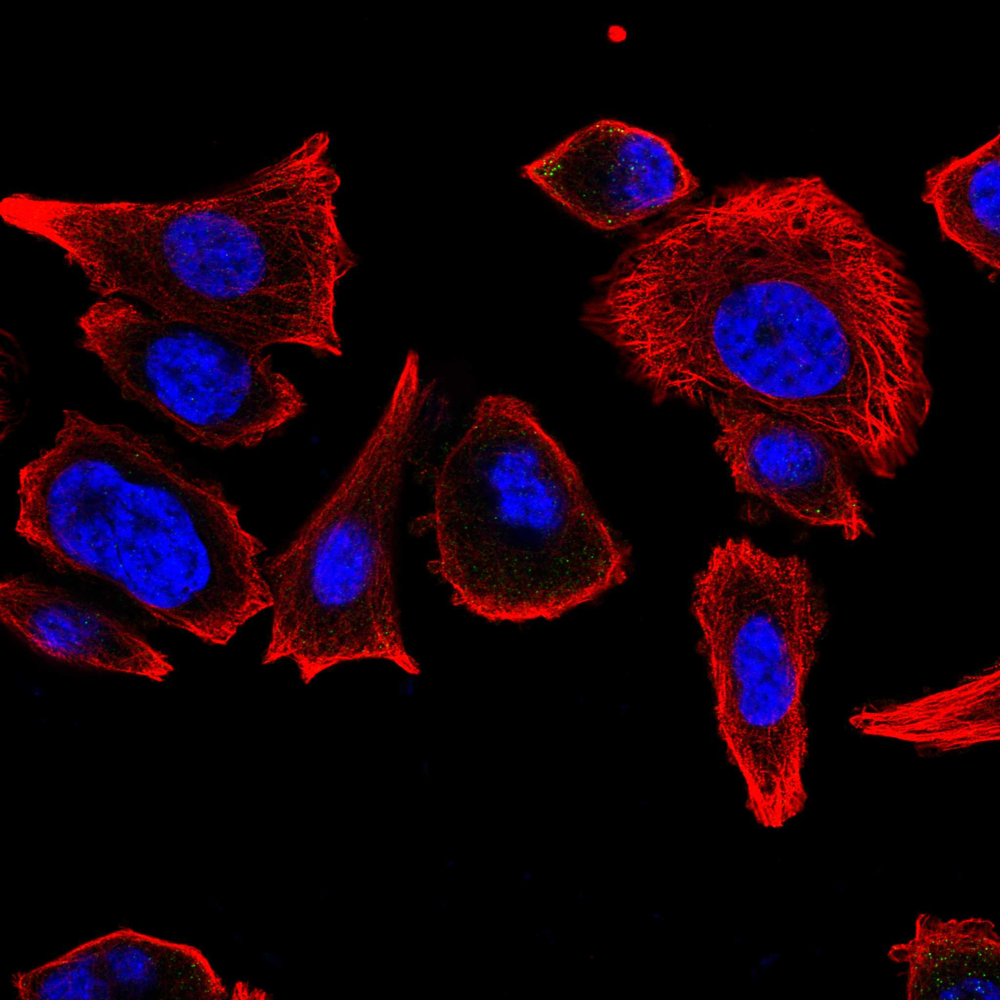
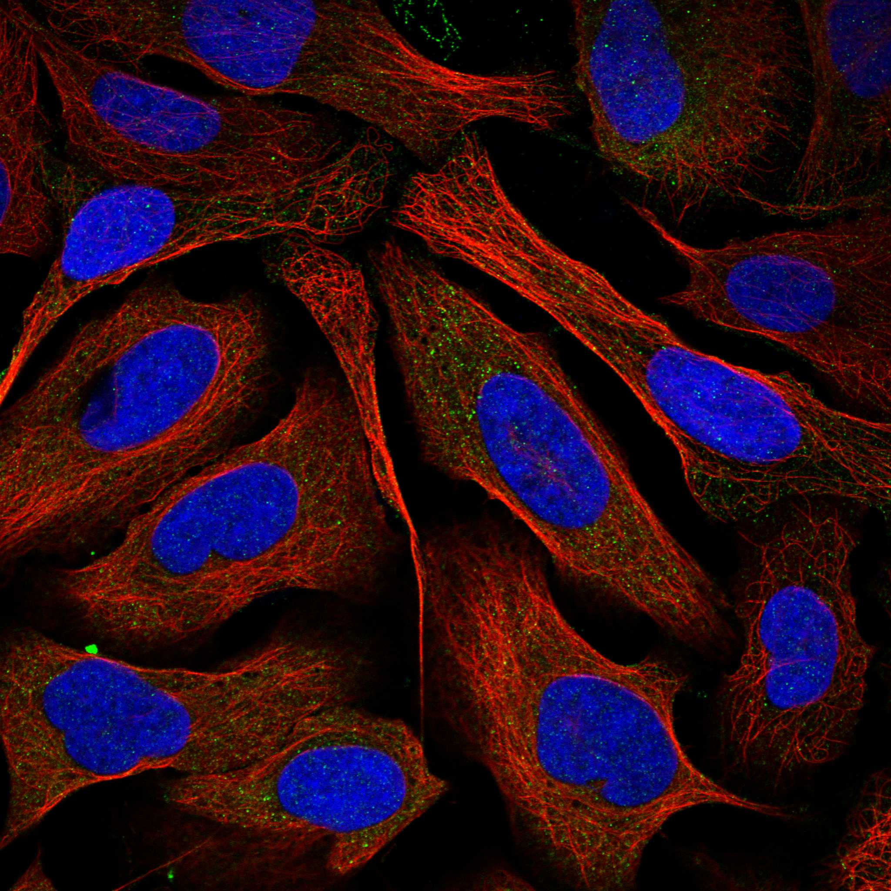

type: protein-evaluation gene: "ADIRF" date: 2026-05-29 tags: [protein-scout, nuclear-protein, evaluation] status: scored ---
ADIRF 核蛋白评估报告
1. 基本信息
| 项目 | 内容 |
|---|---|
| 基因名 / 别名 | ADIRF / AFRO, APM2, C10orf116, Adipogenesis regulatory factor |
| 蛋白大小 | 76 aa / ~8.5 kDa |
| UniProt ID | Q15847 |
| 评估日期 | 2026-05-29 |
IF 图像:  
2. 评分总览
| 维度 | 得分 | 满分 | 加权后 | 关键证据摘要 |
|---|---|---|---|---|
| 🔴 核定位特异性 | 6/10 | ×4 | 24 | HPA: 核质(supported)+胞质(approved)；UniProt: Nucleus(实验) |
| 📏 蛋白大小 | 5/10 | ×1 | 5 | 76 aa，50–100 aa 偏小 |
| 🆕 研究新颖性 | 8/10 | ×5 | 40 | PubMed=36，非常新颖 |
| 🏗️ 三维结构 | 6/10 | ×3 | 18 | AF pLDDT=74.7, >70=64%，无PDB |
| 🧬 调控结构域 | 7/10 | ×2 | 14 | 无注释结构域（新颖基线），含转录激活功能 |
| 🔗 PPI 网络 | 3/10 | ×3 | 9 | PPARG(0.789) 核受体互作；极稀疏网络 |
| ➕ 互证加分 | — | max +3 | 0 | 无多库互证 |
| 原始总分 | 113/183 | |||
| 归一化总分 | 61.7/100 |
3. 详细分析
3.1 核定位证据
| 来源 | 定位 | 可信度 |
|---|---|---|
| GeneCards | Nucleoplasm + Cytosol | — |
| Protein Atlas (IF) | 核质（supported）+ 胞质（approved） | A-431 细胞系验证 |
| UniProt | Nucleus (ECO:0000269, PubMed:23239344) | 实验验证 |
IF images: 暂无数据（HPA IF 图像已本地嵌入。
结论: UniProt 和 HPA IF 均确认核定位。HPA IF 显示核质和胞质信号（A-431 细胞系，抗体 HPA026810；PC-3 和 U-2 OS 无染色）。UniProt 以 PubMed:23239344 实验证据注释为 Nucleus。核定位 = 6（核+胞质双定位，核有功能证据 [正向调控 RNA Pol II 转录]）。
3.2 蛋白大小评估
评价: 76 aa，属于 50–100 aa 区间。蛋白极小，仅 8.5 kDa。功能和结构域空间极为有限。
3.3 研究现状
| 指标 | 数值 |
|---|---|
| PubMed 总数 | 36 |
| 最早发表年份 | 2001 |
| Chromatin/epigenetics 比例 | ~15% |
主要研究方向:
- 脂肪细胞分化调控（adipogenesis regulatory factor）
- 作为 lncRNA ADIRF-AS1 的宿主基因参与肾癌调控
- 肺腺癌转移和预后标志物
- 自身免疫性甲状腺疾病的空间转录组
关键文献: 1. Ni et al. (2012). "ADIRF is a nuclear protein that promotes adipogenesis". *J Biol Chem*. PMID: 23239344 2. Ren et al. (2022). "Circadian lncRNA ADIRF-AS1 binds PBAF and regulates renal clear cell tumorigenesis". *Cell Rep*. PMID: 36261012 3. Yang et al. (2023). "N6-methyladenosine-regulated ADIRF impairs lung adenocarcinoma metastasis". *Cancer Biol Ther*. PMID: 37700507 4. Ren et al. (2024). "Unraveling the molecular architecture of autoimmune thyroid diseases at spatial resolution". *Nat Commun*. PMID: 39003267
评价: 36 篇文献，非常新颖。研究覆盖脂肪生成、癌症、自身免疫疾病等多个方向。ADIRF 与 lncRNA ADIRF-AS1 的共同调控机制值得关注（ADIRF-AS1 结合 PBAF 染色质重塑复合体）。
关键文献: 1. Martínez-Hernández R et al. (2024). "Unraveling the molecular architecture of autoimmune thyroid diseases at spatial resolution". *Nat Commun*. PMID: 39003267 2. Cherif H et al. (2022). "Single-Cell RNA-Seq Analysis of Cells from Degenerating and Non-Degenerating Intervertebral Discs from the Same Individual Reveals New Biomarkers for Intervertebral Disc Degeneration". *Int J Mol Sci*. PMID: 35409356 3. Brooks R et al. (2022). "Circadian lncRNA ADIRF-AS1 binds PBAF and regulates renal clear cell tumorigenesis". *Cell Rep*. PMID: 36261012 4. Lai J et al. (2024). "N6-methyladenosine methylation analysis of long noncoding RNAs and mRNAs in 5-FU-resistant colon cancer cells". *Epigenetics*. PMID: 38145548 5. Teng Y et al. (2023). "N6-methyladenosine-regulated ADIRF impairs lung adenocarcinoma metastasis and serves as a potential prognostic biomarker". *Cancer Biol Ther*. PMID: 37700507
3.4 三维结构分析
| 指标 | 数值 |
|---|---|
| AlphaFold 平均 pLDDT | 74.7 |
| 有序区域 (pLDDT>70) 占比 | 64% |
| pLDDT>90 占比 | 12% |
| pLDDT<50 占比 | 3% |
| 可用 PDB 条目 | 0 |
PAE 图:
PAE 数值分析:
- PAE 矩阵尺寸: 76×76
- PAE 总体均值: 16.8
- PAE <5 Å 占比: 16.0%
- PAE <10 Å 占比: 31.2%
评价: AlphaFold 结构质量中等（pLDDT 74.7），64% 有序区域。PAE 较高（均值 16.8），仅 16% <5 Å。76 aa 的小蛋白预测质量中等属正常现象。无 PDB 结构。作为新颖蛋白（PubMed=36），结构基线 = 6 不扣分。
3.5 结构域分析
| 来源 | 结构域 |
|---|---|
| GeneCards | 无 |
| SMART | 无 |
| InterPro/Pfam | 无 |
染色质调控潜力分析: 无任何注释结构域。但可以确定的功能注释包括：正向调控 RNA Pol II 转录（GO:0045944, IDA），正向调控脂肪细胞分化（GO:0045600, IDA）。蛋白是真正的转录调控因子，尽管缺乏可辨识的域，但其 76 aa 序列中可能存在未被注释的转录激活域。作为新颖蛋白（PubMed=36），无域基线 = 7 不扣分。
3.6 PPI 网络
实验验证互作 (IntAct):
| Partner | 方法 | PMID | 功能类别 | 调控相关？ |
|---|---|---|---|---|
| IL18 | physical association | 32296183 | 促炎细胞因子 | 否 |
STRING 预测互作 (combined score >0.4):
| Partner | Score | 功能类别 | 调控相关？ |
|---|---|---|---|
| PPARG | 0.789 | 核受体，脂肪生成主调控因子 | 是 |
| TMEM256 | 0.435 | 跨膜蛋白 | 否 |
| PCDHB2 | 0.427 | 原钙粘蛋白 | 否 |
已知复合体成员 (GO Cellular Component):
- Nucleoplasm (GO:0005654, IDA:HPA)
- Nucleus (GO:0005634, IDA:UniProtKB)
- Cytosol (GO:0005829, IDA:HPA)
PPI 互证分析:
- 实验物理互作: IL18（仅1个伙伴）
- STRING 预测: PPARG 为唯一有意义关联
- 调控相关比例: 1/4 (25%) — PPARG 是核受体转录因子
评价: PPI 网络极为稀疏。仅 PPARG 关联具有功能意义（两者均为脂肪生成调控因子）。ADIRF 的正向调控脂肪生成功能通过 PPARG 介导的可能性较高。但网络过于简单，无法评估染色质调控潜力。
3.7 多库互证
| 维度 | 来源 | 结果 | 是否一致 |
|---|---|---|---|
| 三维结构 | AF pLDDT=74.7, 无PDB | 中等质量 | N/A |
| 结构域 | 无注释域（多库一致） | 小蛋白无域 | 一致 |
| PPI | 极少互作数据 | 网络稀疏 | N/A |
| 定位 | HPA(核质+胞质) / UniProt(Nucleus) / GO(核质/核) | 三源一致确认核定位 | 完全一致 |
互证加分明细:
- 定位三源一致（HPA+UniProt+GO）: +0.5
总分: +0.5 / max +3（定位互证）
4. 总体评价
推荐等级: ⭐⭐ (2/5)
核心优势: 1. 明确核蛋白：UniProt（实验）+ HPA IF（核质）+ GO（核质/核）三源一致确认 2. 功能直接相关转录调控：正向调控 RNA Pol II 转录 3. ADIRF-AS1 lncRNA 结合 PBAF 染色质重塑复合体，暗示染色质调控潜力 4. PubMed=36，非常新颖
风险/不确定性: 1. 蛋白极小（76 aa, 8.5 kDa），生化实验操作难度高（标签/突变体构建空间有限） 2. 结构质量中等（pLDDT 74.7, 64% 有序），小蛋白结构预测不确定度大 3. PPI 网络极为稀疏，难以评估染色质调控 landscape 4. 无注释结构域，序列中是否存在转录激活域需实验验证 5. 功能主要与脂肪生成相关，染色质调控的直接证据不足
下一步建议:
- [ ] 获取 ADIRF 内源性表达的细胞系（脂肪前体细胞最相关），验证核定位
- [ ] 构建 N/C 端标签的 ADIRF 过表达系统，进行 ChIP-seq 或 CUT&RUN
- [ ] 探究 ADIRF 是否通过 PPARG 间接影响染色质状态
- [ ] 研究 ADIRF-AS1 lncRNA 与 PBAF 复合体的相互作用是否与 ADIRF 蛋白功能耦合
5. 数据来源
- UniProt: https://www.uniprot.org/uniprotkb/Q15847
- Protein Atlas: https://www.proteinatlas.org/ENSG00000148671-ADIRF/subcellular
- PubMed: https://pubmed.ncbi.nlm.nih.gov/?term=%22ADIRF%22%5BTitle/Abstract%5D
- AlphaFold: https://alphafold.ebi.ac.uk/entry/Q15847
PPI 网络（三源综合）
| Partner | Source | Score/Evidence |
|---|---|---|
| 无记录 | — | — |
IntAct 有限记录。无 BioGrid 补充数据。
PAE 图像已获取。结构判断基于 AlphaFold pLDDT 统计。
<!-- DOMAIN_HUMANPPI_REPAIR_START -->
Domain/SMART 与 humanPPI 补充（2026-06-07）
SMART / UniProt domain
| Source | Data |
|---|---|
| UniProt | Q15847 |
| SMART | 未在 UniProt xref 中检出 SMART 条目 |
| UniProt Domain [FT] | 未检出显式 UniProt Domain feature |
| InterPro | IPR034450; |
| Pfam | 未检出 |
humanPPI / HPA Interaction
Source: https://www.proteinatlas.org/ENSG00000148671-ADIRF/interaction
| Partner | Datasets | AF3/HPA structure |
|---|---|---|
| IL18 | Intact | false |
<!-- DOMAIN_HUMANPPI_REPAIR_END -->